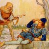
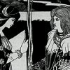

|  |
|
CHAPTER VIII How Accolon found himself by a well, and he took upon him to do battle against Arthur.Reading time: 4 minutes. Word count: 800 words. |
NOW turn we unto Accolon of Gaul, that when he awoke he found himself by a deep well-side, within half a foot, in great peril of death. And there came out of that fountain a pipe of silver, and out of that pipe ran water all on high in a stone of marble.
When Sir Accolon saw this, he blessed him and said, Jesus save my lord King Arthur, and King Uriens, for these damosels in this ship have betrayed us, they were devils and no women; and if I may escape this misadventure, I shall destroy all where I may find these false damosels that use enchantments.
Right with that there came a dwarf with a great mouth and a flat nose, and saluted Sir Accolon, and said how he came from Queen Morgan le Fay, and she greeteth you well, and biddeth you be of strong heart, for ye shall fight to morrow with a knight at the hour of prime, and therefore she hath sent you here Excalibur, Arthur's sword, and the scabbard, and she biddeth you as ye love her, that ye do the battle to the uttermost, without any mercy, like as ye had promised her when ye spake together in privity; and what damosel that bringeth her the knight's head, which ye shall fight withal, she will make her a queen.
Now I understand you well, said Accolon, I shall hold that I have promised her now I have the sword: when saw ye my lady Queen Morgan le Fay?
Right late, said the dwarf.
Then Accolon took him in his arms and said, Recommend me unto my lady queen, and tell her all shall be done that I have promised her, and else I will die for it. Now I suppose, said Accolon, she hath made all these crafts and enchantments for this battle.
Ye may well believe it, said the dwarf.
Right so there came a knight and a lady with six squires, and saluted Accolon, and prayed him for to arise, and come and rest him at his manor. And so Accolon mounted upon a void horse, and went with the knight unto a fair manor by a priory, and there he had passing good cheer.
Then Sir Damas sent unto his brother Sir Ontzlake, and bade make him ready by to-morn at the hour of prime, and to be in the field to fight with a good knight, for he had found a good knight that was ready to do battle at all points.
When this word came unto Sir Ontzlake he was passing heavy, for he was wounded a little to-fore through both his thighs with a spear, and made great dole; but as he was wounded, he would have taken the battle on hand.
So it happed at that time, by the means of Morgan le Fay, Accolon was with Sir Ontzlake lodged; and when he heard of that battle, and how Ontzlake was wounded, he said that he would fight for him. Because Morgan le Fay had sent him Excalibur and the sheath for to fight with the knight on the morn: this was the cause Sir Accolon took the battle on hand. Then Sir Ontzlake was passing glad, and thanked Sir Accolon with all his heart that he would do so much for him. And therewithal Sir Ontzlake sent word unto his brother Sir Damas, that he had a knight that for him should be ready in the field by the hour of prime.
So on the morn Sir Arthur was armed and well horsed, and asked Sir Damas, When shall we to the field?
Sir, said Sir Damas, ye shall hear mass.
And so Arthur heard a mass, and when mass was done there came a squire on a great horse, and asked Sir Damas if his knight were ready, for our knight is ready in the field. Then Sir Arthur mounted upon horseback, and there were all the knights and commons of that country; and so by all advices there were chosen twelve good men of the country for to wait upon the two knights.
And right as Arthur was on horse back there came a damosel from Morgan le Fay, and brought unto Sir Arthur a sword like unto Excalibur, and the scabbard, and said unto Arthur, Morgan le Fay sendeth here your sword for great love.
And he thanked her, and weened it had been so, but she was false, for the sword and the scabbard was counterfeit, and brittle, and false.
|
Questions. Make sure you can answer these questions about what you just read:
Source: Malory's Le Morte d'Arthur, published by William Caxton (1485), with spelling modernized. Weblink. The original Caxton text is also available online: weblink. |
Modern
Languages / Anthropology 3043: Folklore & Mythology.
Laura Gibbs, Ph.D.
This work is licensed under a Creative
Commons License.
You must give the original author credit. You may not use this work for commercial
purposes. If you alter, transform, or build upon this work, you may distribute
the resulting work only under a license identical to this one. |